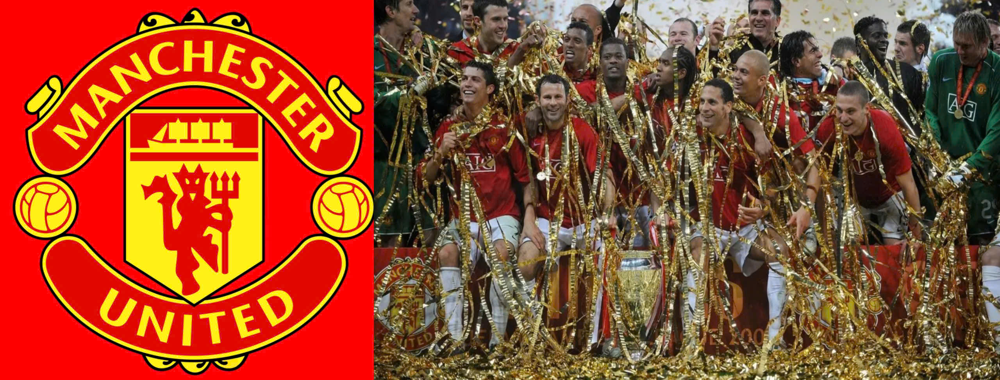
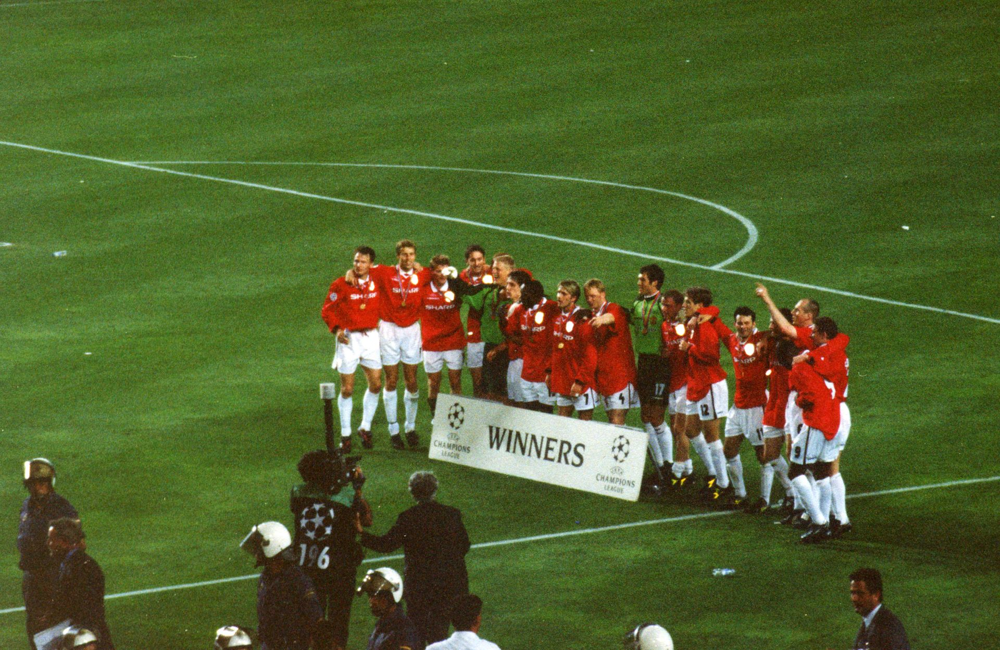
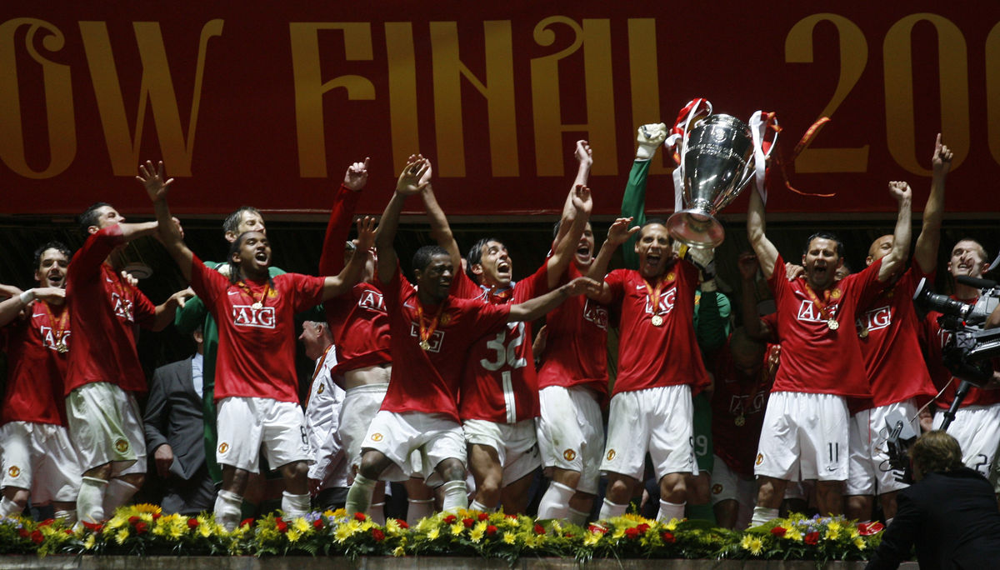
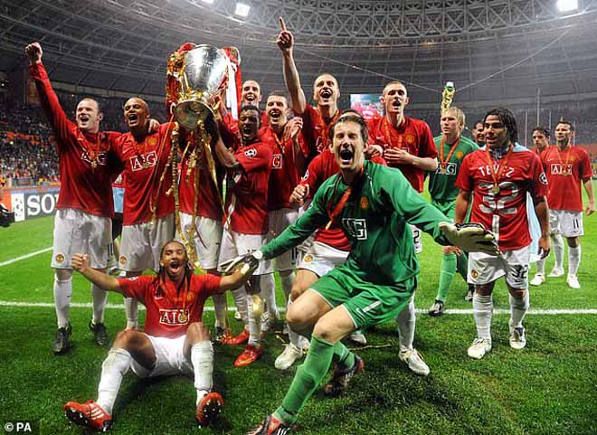
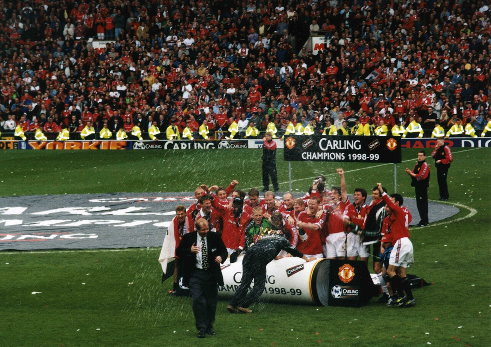
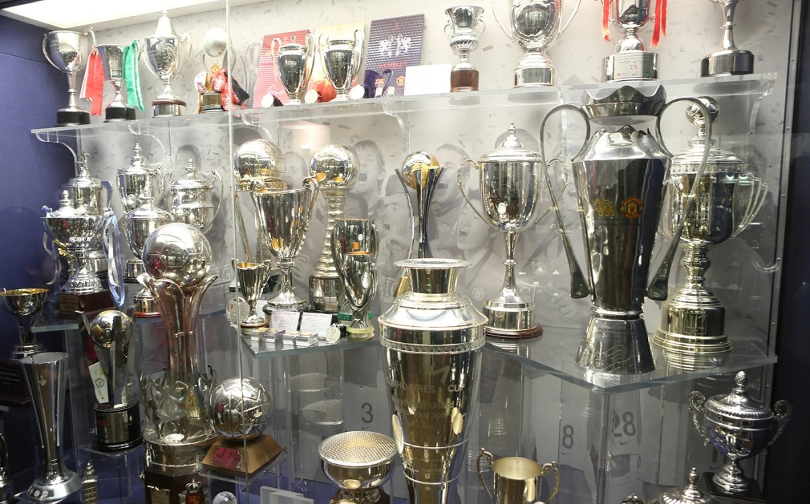
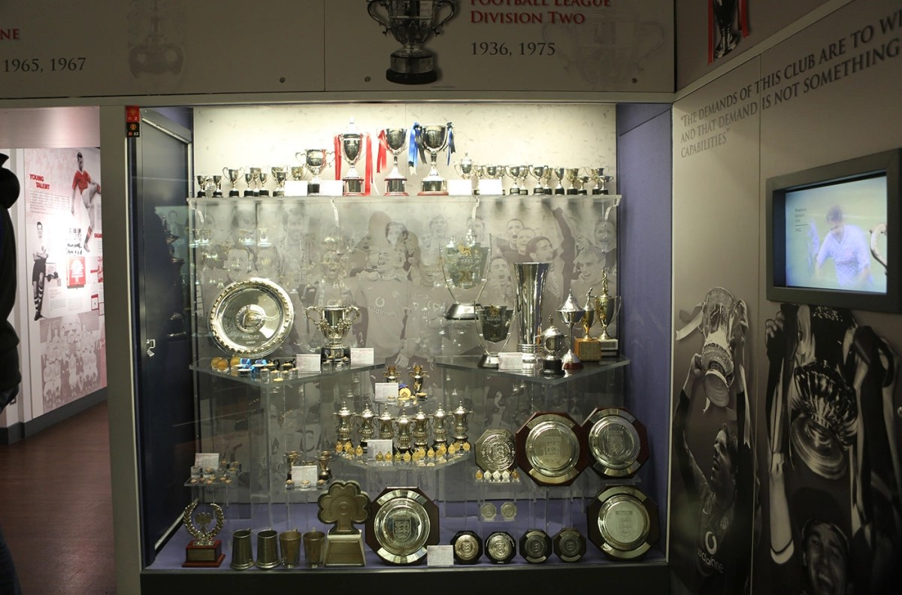
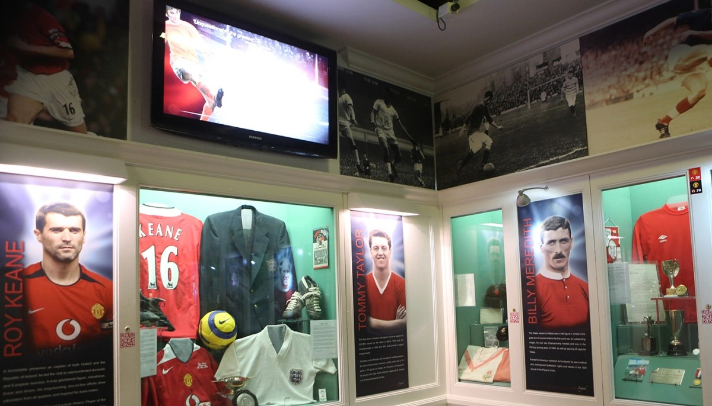
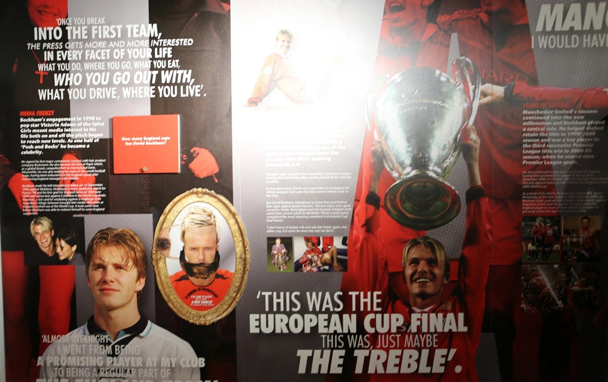
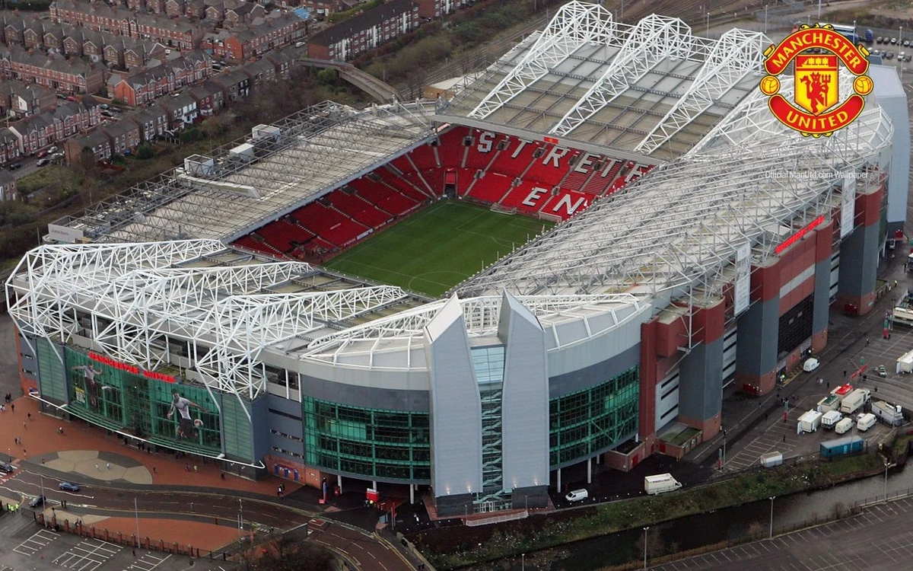

Dưới sự hình thành và phát triển lâu dài của bóng đá Anh, câu lạc bộ Manchester United được thành lập vào năm 1878 với tên gọi ban đầu là Newton Heath. Trải qua nhiều biến động về tài chính và tổ chức, đến năm 1902, đội bóng chính thức đổi tên thành Manchester United và dần khẳng định vị thế của mình trong làng bóng đá xứ sở sương mù.
Trong những thập niên tiếp theo, Manchester United từng bước phát triển và gặt hái những thành công đầu tiên, đặc biệt dưới thời huấn luyện viên huyền thoại Matt Busby. Tuy nhiên, lịch sử đội bóng cũng ghi dấu biến cố đau thương với Munich air disaster năm 1958, khiến nhiều cầu thủ tài năng thiệt mạng. Sau biến cố, đội bóng đã tái thiết mạnh mẽ và giành chức vô địch Cúp C1 châu Âu năm 1968, mở ra trang sử mới đầy tự hào.
Bước vào giai đoạn hoàng kim, dưới sự dẫn dắt của Sir Alex Ferguson từ năm 1986, Manchester United đã vươn lên thống trị bóng đá Anh và châu Âu. Đội bóng giành hàng loạt danh hiệu lớn, trong đó có cú ăn ba lịch sử năm 1999, bao gồm Premier League, FA Cup và UEFA Champions League, trở thành một trong những câu lạc bộ vĩ đại nhất thế giới.
Kể từ sau khi Sir Alex Ferguson nghỉ hưu năm 2013, Manchester United bước vào giai đoạn chuyển giao với nhiều thay đổi trên băng ghế huấn luyện và đội hình. Dù gặp không ít khó khăn, đội bóng vẫn luôn là cái tên giàu truyền thống, sở hữu lượng người hâm mộ đông đảo trên toàn cầu và tiếp tục hướng tới mục tiêu tìm lại ánh hào quang trong tương lai.
20 Premier League
12 FA Cup
6 League Cup
3 Champions League
1 Europa League
1 Club World Cup





Bảo tàng Manchester United lưu giữ hơn 300 chiếc cúp lớn nhỏ, từ các giải quốc nội đến đấu trường châu Âu.

Bộ sưu tập các danh hiệu từ năm 1936 đến năm 1975 của "quỷ đỏ".

Hình ảnh quần áo, kỷ niệm của các cầu thủ ngôi sao đội bóng được trưng bày và bảo vệ cẩn thận trong bảo tàng.

Cựu ngôi sao David Beckham có một khu trưng bày riêng trong bảo tàng của đội bóng với nhiều hình ảnh, thành tích, ký ức lẫn các danh hiệu mà anh đã giành được cùng đội bóng.
Old Trafford là sân vận động bóng đá nổi tiếng thế giới, nằm ở Manchester, Anh. Đây là sân nhà của câu lạc bộ Manchester United và được mệnh danh là "Nhà hát của những giấc mơ".
